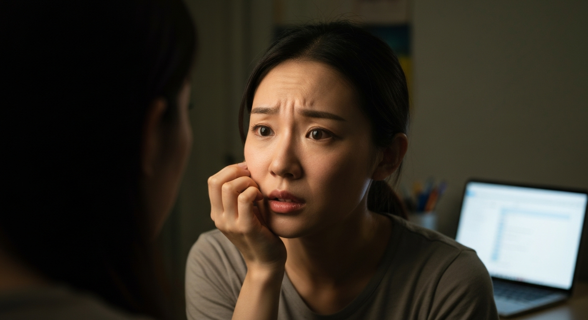

顏值飆升秘訣！皮膚科醫生私藏的「抗老神物」，我用完直接變校花！

第 1 篇
誰說年輕就沒有「抗老焦慮」？別鬧了，你的青春比你想的更脆弱！
你以為「抗老」是30+、40+阿姨們的專利？別傻了，現在是2024年，你的「青春保質期」比你媽那年代短了至少十年！我叫薇安，一個曾經對「抗老」嗤之以鼻的大學生。我曾以為只要基礎保濕防曬就夠，直到我發現身邊那些「天生麗質」的同學，臉上悄悄冒出淺淺的法令紋和疲憊紋。不是曬黑，是「顯老」！這種來自同儕的無形壓力，比期末考還讓人焦慮。很多人以為這些只是「表情紋」，忍忍就好，反正年輕嘛。錯！大錯特錯！這就像你手機電量只剩30%，卻還在看高畫質影片，硬撐的結果就是加速電池老化。皮膚也一樣，那些微小的紋路，是肌膚發出的求救訊號，告訴你膠原蛋白正在光速流失。你現在不救，等它跌到谷底，誰都救不回來。更可怕的是，這種「初老」的跡象，往往會被歸咎於睡眠不足、壓力大，而不是「抗老」問題，於是大家繼續熬夜、繼續喝手搖飲，最後錯過了最佳挽救期。我就是這樣，直到有一次，我媽突然問我：「薇安，你最近是不是很累？怎麼氣色這麼差？」那句話，就像一道閃電劈中我，我才意識到，青春真的不等人。你以為的「年輕本錢」，其實是個巨大騙局。
💬 青春保質期，比你想像的更短，也更殘酷。現在不救，等它跌到谷底，誰都救不回來。
第 2 篇
別再花大錢買網紅爆款了！皮膚科醫生揭秘：真正有效的「抗老神物」是什麼？
我敢打賭，你至少買過一個網紅推薦的「神奇精華」，號稱能讓你一夜回春。結果呢？除了錢包回春，你臉上該有的紋路還是在。這就是現代人抗老最大的陷阱：盲從！我們被社群媒體餵養了太多速成、奇蹟般的「神話」，以為只要跟著買就能變美。我曾經也是「網紅產品受害者聯盟」的資深成員。我把錢都砸在那些瓶瓶罐罐上，從貴婦級面霜到平價小紅瓶，結果肌膚狀況沒改善，反而因為疊擦太多成分不明的產品，導致皮膚敏感泛紅。那段時間，我甚至開始懷疑人生，難道我的皮膚真的沒救了嗎？
直到我媽介紹我認識一位皮膚科醫生，張醫生。她一語道破我的迷思：「薇安，你知道為什麼很多貴的護膚品無效嗎？因為它們要滿足大眾市場，成分必須溫和，濃度不能太高，效果自然有限。真正有效的，往往是那些被『主流』忽略，但有科學實證的成分。」張醫生進一步解釋，抗老的核心從來不是「修復」，而是「預防」和「刺激」。她給我看了一些研究報告，數據顯示某些成分，在特定濃度下，能有效刺激膠原蛋白增生，同時抑制自由基。這些東西，包裝可能不華麗，味道可能不討喜，但它們是真的「狠角色」。她給我的建議，顛覆了我對「抗老」的所有認知。這就像你以為要吃山珍海味才能健身，結果教練告訴你，蛋白粉和水煮雞胸肉才是王道。
直到我媽介紹我認識一位皮膚科醫生，張醫生。她一語道破我的迷思：「薇安，你知道為什麼很多貴的護膚品無效嗎？因為它們要滿足大眾市場，成分必須溫和，濃度不能太高，效果自然有限。真正有效的，往往是那些被『主流』忽略，但有科學實證的成分。」張醫生進一步解釋，抗老的核心從來不是「修復」，而是「預防」和「刺激」。她給我看了一些研究報告，數據顯示某些成分，在特定濃度下，能有效刺激膠原蛋白增生，同時抑制自由基。這些東西，包裝可能不華麗，味道可能不討喜，但它們是真的「狠角色」。她給我的建議，顛覆了我對「抗老」的所有認知。這就像你以為要吃山珍海味才能健身，結果教練告訴你，蛋白粉和水煮雞胸肉才是王道。
💬 別再被網紅騙了，你花大錢買的不是效果，而是心理安慰劑。真正有效的抗老，從來不是「修復」，而是「預防」和「刺激」。
第 3 篇
我用完直接變校花！「抗老神物」的真相：不是變年輕，而是「重新定義年輕」！
張醫生給我推薦的「抗老神物」，其實是一種我以前從沒想過會跟「抗老」扯上關係的成分——低濃度A醇配合特定抗氧化劑。她強調，重點不在「猛藥」，而在「精準」和「長期」。剛開始，我其實有點不屑，想說這不是阿嬤才用的東西嗎？但她說服我，現在市面上很多宣稱抗老的產品，要嘛濃度不夠，要嘛搭配了太多無效成分，效果自然打折。而她推薦的，是經過嚴格測試、穩定性高的配方。我抱著死馬當活馬醫的心情，開始使用。第一個月，沒什麼驚天動地的變化，甚至有點脫皮。我差點想放棄，但張醫生鼓勵我：「這是在『換膚』，忍一忍，會有驚喜。」第二個月，我開始感覺皮膚變得細滑，毛孔好像也縮小了。最讓我震驚的是，原本疲憊的眼神，好像也變得更明亮有神。第三個月，變化來了！有一天，我走在校園裡，聽到幾個學弟在討論：「那個陳薇安，最近是不是偷偷去醫美啊？感覺突然變超正的！」我當下心裡os：沒有醫美，只有張醫生！
這讓我意識到，抗老從來不是讓你回到18歲，而是讓你超越你現在的「最好狀態」。它不是讓你「變年輕」，而是讓你「重新定義年輕」。當你的皮膚狀況達到巔峰，那種由內而外散發的自信，才是真正的「校花級光芒」。它讓你看起來不只是沒皺紋，更是精神飽滿、氣色紅潤，彷彿時間在你身上按下了暫停鍵。這種「逆齡感」不是靠修圖，而是實實在在的肌膚質感。那種被說「最近是不是有戀愛」的感覺，真的很爽。我不再害怕素顏，甚至開始享受陽光，因為我知道我的肌膚有能力抵禦歲月侵蝕。這種安全感，是任何奢華保養品都給不了的。
這讓我意識到，抗老從來不是讓你回到18歲，而是讓你超越你現在的「最好狀態」。它不是讓你「變年輕」，而是讓你「重新定義年輕」。當你的皮膚狀況達到巔峰，那種由內而外散發的自信，才是真正的「校花級光芒」。它讓你看起來不只是沒皺紋，更是精神飽滿、氣色紅潤，彷彿時間在你身上按下了暫停鍵。這種「逆齡感」不是靠修圖，而是實實在在的肌膚質感。那種被說「最近是不是有戀愛」的感覺，真的很爽。我不再害怕素顏，甚至開始享受陽光，因為我知道我的肌膚有能力抵禦歲月侵蝕。這種安全感，是任何奢華保養品都給不了的。
💬 抗老不是讓你回到18歲，而是讓你超越你現在的「最好狀態」。它不是讓你「變年輕」，而是讓你「重新定義年輕」。